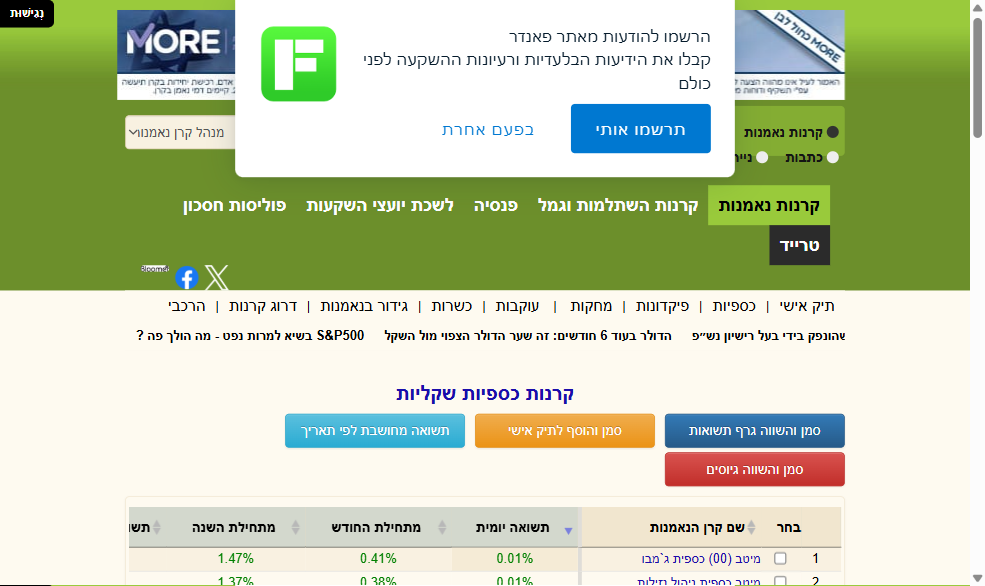

המייקובר הפיננסי
איך עושים שינוי טוטאלי במצב הכלכלי שלנו, סיכום הספר של דייב ראמזי

דייב ראמזי הוא יועץ פיננסי מפורסם מאוד שחווה קריסה כלכלית בשנות ה-20 לחייו, אחרי שחברת נדל"ן ברשותו קרסה לגורמים בגלל פירעון הלוואות. לאחר מכן הוא התאושש ויצר את שיטת 7 צעדי התינוק לשינוי כלכלי, שיש אנשים שמתחברים אליה פחות ויש שיותר. כיום הוא בעל תוכנית רדיו מהמצליחות בעולם, שבה הוא עוזר לאנשים לעשות את השינוי הכלכלי הגדול שלהם.
אז מה הם 7 הצעדים הפשוטים שהוא מציג
חסכו 1,000 דולר לקרן חירום ראשונית
לישראלים הייתי אומר לחסוך 4,000 ש"ח במהירות האפשרית כדי להקים קרן חירום ראשונית. כולנו צריכים כסף זמין לגיבוי בכל זמן נתון. לפני שמתחילים לעשות שינוי גדול חשוב שיהיה לנו כסף נזיל בצד להוצאה לא צפויה, גם כשאנחנו מתחילים לסגור את החובות שלנו.
חסלו את כל החובות בשיטת כדור השלג
שיטת כדור השלג היא שיטה מדהימה לסגירת חובות. במקום לסגור את ההלוואה הגדולה והיקרה, מתחילים דווקא בהלוואה הקטנה והקצרה. אחרי שסוגרים אותה ממשיכים להלוואה הגדולה יותר ומנצלים את החיסכון שנוצר מההלוואה הקטנה כתוספת לסגירת ההלוואה הבאה. ככה עושים פעם אחר פעם. היתרון בשיטה הזאת הוא תחושת ההצלחה שאנחנו חווים כשאנחנו רואים שהלוואות נסגרות.
הרחיבו את קרן החירום ל-3 עד 6 חודשי מחיה
כשאתם מצליחים לסגור את החובות אתם מתחילים לבנות את קרן החירום שלכם, כי כולם צריכים כסף זמין ליום שחור, ובמיוחד כשתתחילו להשקיע ולא תרצו לפגוע בעבודה של התיק שלכם.
השקיעו 15% מהכנסת משק הבית לפרישה
לרוב הישראלים יש הפרשת חובה לפנסיה אוטומטית דרך המשכורת, ועצמאים צריכים להפריש לעצמם. אני הייתי מציע שכל אחד ידע להפריש לפחות עשירית מהמשכורת שלו לחיסכונות, לטובת צמיחה ולטובת הפרישה העתידית.
חסכו והשקיעו להשכלה גבוהה של הילדים
בארצות הברית התשלומים על לימודים יקרים ברמות. בישראל זה פחות רלוונטי, כי להרבה ישראלים יש אפשרויות מימון דרך הצבא, מלגות וכו'. הייתי שם את הדגש שההורים ידעו לשים את החיסכון לכל ילד במסלול הנכון, כי הפער בין מסלול מנייתי למסלול סולידי יכול להגיע לעשרות אלפי שקלים בסוף הדרך.
שלמו את המשכנתא מוקדם ככל האפשר
משכנתא בישראל יכולה להיות דבר טוב או דבר שחונק אותנו. צריך לדבר עם אנשי מקצוע נכונים ולייצר תוכנית שתתאים לכל אחד לפי מצבו.
בנו עושר וגם תרמו ותנו בנדיבות
כדי לבנות עושר צריך להתמיד. מי שיוצא מחובות ומצליח להכניס יותר ממה שהוא מוציא יכול להתחיל לבנות עושר על ידי חיסכון והשקעות. אם נדע להכניס יותר ממה שאנחנו מוציאים ולהשקיע את ההפרש עם אסטרטגיה, נהפוך את העתיד שלנו להרבה יותר טוב.
הספר מציע נקודות טובות ופשוטות על איך לעשות שינוי בחיים הפיננסיים שלנו, ואני ניסיתי להתאים את זה לנו כישראלים. אני חושב שבחיים אין קסמים, זה מתחיל בהחלטה ואז בהתמדה בלתי מתפשרת.
רוצים להתחיל את השינוי הכלכלי שלכם?
ליווי אישי שיעזור לכם לבנות תוכנית פעולה מותאמת לחיים שלכם בישראל
דברו איתי עכשיוהכתוב אינו מהווה ייעוץ השקעות ואינו תחליף לייעוץ אישי. שיתוף ידע ודעה בלבד.